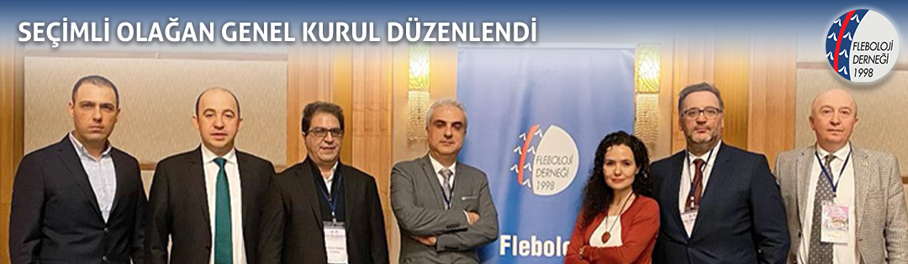

<?xml version="1.0" encoding="UTF-8"?><rss version="2.0"
	xmlns:content="http://purl.org/rss/1.0/modules/content/"
	xmlns:wfw="http://wellformedweb.org/CommentAPI/"
	xmlns:dc="http://purl.org/dc/elements/1.1/"
	xmlns:atom="http://www.w3.org/2005/Atom"
	xmlns:sy="http://purl.org/rss/1.0/modules/syndication/"
	xmlns:slash="http://purl.org/rss/1.0/modules/slash/"
	>

<channel>
	<title>Fleboloji Derneği</title>
	<atom:link href="http://www.flebolojidernegi.org.tr/feed/" rel="self" type="application/rss+xml" />
	<link>http://www.flebolojidernegi.org.tr</link>
	<description>Fleboloji Derneği</description>
	<lastBuildDate>Wed, 15 Jan 2020 06:25:03 +0000</lastBuildDate>
	<language>tr-TR</language>
	<sy:updatePeriod>hourly</sy:updatePeriod>
	<sy:updateFrequency>1</sy:updateFrequency>
	<generator>https://wordpress.org/?v=4.7.16</generator>
	<item>
		<title>Seçimli Olağan Genel Kurul Düzenlendi</title>
		<link>http://www.flebolojidernegi.org.tr/secimli-olagan-genel-kurul-duzenlendi/</link>
		<pubDate>Tue, 14 Jan 2020 06:11:48 +0000</pubDate>
		<dc:creator><![CDATA[Fleboloji Derneği]]></dc:creator>
				<category><![CDATA[Duyurular]]></category>

		<guid isPermaLink="false">http://www.flebolojidernegi.org.tr/?p=518</guid>
		<description><![CDATA[Saygıdeğer Hocalarımız ve Meslektaşlarımız, Derneğimizin seçimli olağan genel kurul toplantısı 11 Ocak 2020 tarihinde Radisson Blue Otel, Şişli’de düzenlenmiştir. Yapılan seçim sonucunda Fleboloji Derneği yeni dönem yönetim kurulunu seçmekten mutluluk duyuyoruz. Yeni yönetim kurulumuzun görev dağılımı aşağıdaki gibi belirlenmiştir: Yönetim Kurulu Başkanı: Serdar Bayrak Başkan Yardımcısı: Erdal Aslım Genel Sekreter: Aybanu Gökçen Sayman: Ali Aycan Kavala [&#8230;]]]></description>
				<content:encoded><![CDATA[<p></p>
<p>Saygıdeğer Hocalarımız ve Meslektaşlarımız,</p>
<p>Derneğimizin seçimli olağan genel kurul toplantısı 11 Ocak 2020 tarihinde Radisson Blue Otel, Şişli’de düzenlenmiştir. Yapılan seçim sonucunda Fleboloji Derneği yeni dönem yönetim kurulunu seçmekten mutluluk duyuyoruz.</p>
<p>Yeni yönetim kurulumuzun görev dağılımı aşağıdaki gibi belirlenmiştir:</p>
<p>Yönetim Kurulu Başkanı: Serdar Bayrak</p>
<ul>
<li>Başkan Yardımcısı: Erdal Aslım</li>
<li>Genel Sekreter: Aybanu Gökçen</li>
<li>Sayman: Ali Aycan Kavala</li>
<li>Üyeler: Adnan Taner Kurdal, Alptekin Yasım, Suat Doğancı</li>
</ul>
<p>Genel kurulumuza ve seçime teşrifleriyle derneğimizin faaliyetlerini ve gelişimini destekleyen ve bu vesile ile yeni yönetim kurulunu seçerek bizi bu onurlu göreve layık gören tüm üyelerimize, eski başkanlarımıza ve değerli hocalarımıza teşekkürlerimizi ve şükranlarımızı sunmaktayız.</p>
<p>Türk Kalp ve Damar Cerrahisi Derneği ile Ulusal Vasküler ve Endovasküler Cerrahi Derneği’ne, gerek tüm yönetim süreçlerimizde bizlerle birliktelikleri, yardımlaşmaları ve destekleri nedeniyle gerekse de genel kurulumuza yönetim kurulları olarak teşrifleri nedeniyle minnetlerimizi sunarız.</p>
<p>Genel kurulumuzu başarıyla yöneten Murat Sargın, Sadık Kıvanç Metin ve Emrah Oğuz hocalarımıza yönetim kurulumuz adına teşekkür ederiz.</p>
<p>Yıl boyunca ülkemizin dört bir köşesinde düzenlenen bölgesel toplantılar ile başlattığımız atılımı 2021 senesinde bir dünya kongresi ile taçlandıracak olmanın haklı gururunu yaşamaktayız. Ülkemiz açısından son derece önemli bir etkinlik düzenleyecek olmak hepimizi heyecanlandırmakla birlikte, hep birlikte, omuz omuza çalışarak bize yakışır bir organizasyonu düzenleyeceğimizden şüphemiz yoktur.</p>
<p>Yeni yönetim kurulu üyelerimiz ile gerek ulusal düzeydeki toplantılarımızın hazırlıklarını gerekse de UIP 2021 kongremizin çalışmalarını durmaksızın yapacağız. Siz değerli üyelerimizin mesleki yaşantılarına katkı sunmak ve her durumda yanınızda olmak en büyük hedefimizdir. Tüm üyelerimizle birlikte bol katılımlı toplantılarla önyargıları, hataları, yeni fikirleri ve belirsiz konuları tartışmak eşsiz bir sinerji yakalamamızı sağlamakta ve geleceğe sizlerle birlikte umutla bakmamıza vesile olmaktadır.</p>
<p>Fleboloji Derneği, büyük hedeflerine kurumsal kimliğini güçlendirerek ve bugün başardığı tüm işleri gelecek kuşaklara zengin bir miras olacak aktaracaktır.</p>
<p>Yönetim kurulumuz adına,</p>
<p>Saygılarımla,</p>
<p>Doç. Dr. Serdar BAYRAK<br />
Fleboloji Derneği Yönetim Kurulu Başkanı</p>
]]></content:encoded>
			</item>
		<item>
		<title>Seçimli Genel Kurul</title>
		<link>http://www.flebolojidernegi.org.tr/secimli-genel-kurul-2019/</link>
		<pubDate>Wed, 04 Dec 2019 15:30:03 +0000</pubDate>
		<dc:creator><![CDATA[Fleboloji Derneği]]></dc:creator>
				<category><![CDATA[Duyurular]]></category>

		<guid isPermaLink="false">http://www.flebolojidernegi.org.tr/?p=513</guid>
		<description><![CDATA[Derneğimizin Olağan Genel Kurulu toplantısı 04.01.2020 Cumartesi günü saat 14.00’de Radisson Blu Şişli’de, yeterli çoğunluk olmadığı takdirde 11.01.2020 Cumartesi günü aynı yer ve saatte toplanacaktır. Sayın üyelere duyurulur GÜNDEM Yönetim Kurulu 1-Açılış 2-Saygı Duruşu 3-Divan Başkanı ve Üyelerinin Seçimi(Bir başkan 2 katip üye) 4-Faaliyet raporunun okunması 5-Denetleme Kurulu raporunun okunması 6-Faaliyet ve Denetleme raporlarının müzakere [&#8230;]]]></description>
				<content:encoded><![CDATA[<p>Derneğimizin Olağan Genel Kurulu toplantısı 04.01.2020 Cumartesi günü saat 14.00’de Radisson Blu Şişli’de, yeterli çoğunluk olmadığı takdirde 11.01.2020 Cumartesi günü aynı yer ve saatte toplanacaktır.</p>
<p>Sayın üyelere duyurulur</p>
<p>GÜNDEM Yönetim Kurulu<br />
1-Açılış<br />
2-Saygı Duruşu<br />
3-Divan Başkanı ve Üyelerinin Seçimi(Bir başkan 2 katip üye)<br />
4-Faaliyet raporunun okunması<br />
5-Denetleme Kurulu raporunun okunması<br />
6-Faaliyet ve Denetleme raporlarının müzakere edilerek ayrı ayrı oylanması<br />
7-Yönetim Kurulunun ibrası<br />
8-Seçimler yönetim kurulu için 5 asil 5 yedek,denetleme kurulu için 3 asil 3 yedek,onur kurulu için 3 asil 3 yedek üye gizli oyla seçilecektir.<br />
9-Öneriler<br />
10-Dilek ve Temenniler<br />
11-Kapanış</p>
]]></content:encoded>
			</item>
		<item>
		<title>Ankara KTEPH için buluşuyor &#124; 9-10 Haziran 2018</title>
		<link>http://www.flebolojidernegi.org.tr/ankara-kteph-icin-bulusuyor/</link>
		<pubDate>Wed, 02 May 2018 08:21:17 +0000</pubDate>
		<dc:creator><![CDATA[Fleboloji Derneği]]></dc:creator>
				<category><![CDATA[Duyurular]]></category>

		<guid isPermaLink="false">http://www.flebolojidernegi.org.tr/?p=476</guid>
		<description><![CDATA[]]></description>
				<content:encoded><![CDATA[<p></p>
<p></p>
]]></content:encoded>
			</item>
		<item>
		<title>VEN GÜNLERİ 2018 PROGRAMI</title>
		<link>http://www.flebolojidernegi.org.tr/ven-gunleri-2018-programi/</link>
		<pubDate>Fri, 16 Feb 2018 06:49:26 +0000</pubDate>
		<dc:creator><![CDATA[Fleboloji Derneği]]></dc:creator>
				<category><![CDATA[Duyurular]]></category>

		<guid isPermaLink="false">http://www.flebolojidernegi.org.tr/?p=466</guid>
		<description><![CDATA[Ven Günleri Trabzon Toplantısı &#124; 20 Ocak 2018 Ven Günleri İstanbul Toplantısı &#124; 27 Ocak 2018 Ven Günleri Ankara Toplantısı &#124; 17 Şubat 2018 Ven Akademisi Sapanca Toplantısı &#124; 24 Şubat 2018 Ven Akademisi Denizli Toplantısı &#124; 17 Mart 2018 Ven Günleri Safranbolu Toplantısı &#124; 14 Nisan 2018 Ven Akademisi İzmir-Çeşme Toplantısı &#124; 28 Nisan [&#8230;]]]></description>
				<content:encoded><![CDATA[<p><strong>Ven Günleri Trabzon Toplantısı | 20 Ocak 2018</strong><br />
<strong>Ven Günleri İstanbul Toplantısı | 27 Ocak 2018</strong><br />
<strong>Ven Günleri Ankara Toplantısı | 17 Şubat 2018</strong><br />
Ven Akademisi Sapanca Toplantısı | 24 Şubat 2018<br />
Ven Akademisi Denizli Toplantısı | 17 Mart 2018<br />
<strong>Ven Günleri Safranbolu Toplantısı | 14 Nisan 2018</strong><br />
Ven Akademisi İzmir-Çeşme Toplantısı | 28 Nisan 2018<br />
Ven Akademisi Kars Toplantısı | 5 Mayıs 2018<br />
<strong>Ven Günleri Edirne Toplantısı | 26 Mayıs 2018</strong></p>
]]></content:encoded>
			</item>
		<item>
		<title>UIP Dünya Kongresi 2021 Yılında İstanbul&#8217;da&#8230;</title>
		<link>http://www.flebolojidernegi.org.tr/uip-dunya-kongresi-2021-yilinda-istanbulda/</link>
		<pubDate>Mon, 12 Feb 2018 11:10:35 +0000</pubDate>
		<dc:creator><![CDATA[Fleboloji Derneği]]></dc:creator>
				<category><![CDATA[Duyurular]]></category>

		<guid isPermaLink="false">http://www.flebolojidernegi.org.tr/?p=453</guid>
		<description><![CDATA[Sayın Üyelerimiz, Avustralya’nın Melbourne şehrinde bugün toplanan International Union of Phlebology (UIP) Genel Kurulu, dört yılda bir düzenlenen ve bir sonraki 2021 yılında gerçekleştirilecek olan UIP Dünya Kongresi’nin Türkiye’de yapılmasına karar vermiştir. Dünyanın en prestijli fleboloji toplantısı olan bu kongre, Ulusal Vasküler ve Endovasküler Cerrahi Kongresi ve Fleboloji Kongresi ile birlikte yapılacaktır. Uzun yıllar süren [&#8230;]]]></description>
				<content:encoded><![CDATA[<p></p>
<p>Sayın Üyelerimiz,</p>
<p>Avustralya’nın Melbourne şehrinde bugün toplanan International Union of Phlebology (UIP) Genel Kurulu, dört yılda bir düzenlenen ve bir sonraki 2021 yılında gerçekleştirilecek olan UIP Dünya Kongresi’nin Türkiye’de yapılmasına karar vermiştir. Dünyanın en prestijli fleboloji toplantısı olan bu kongre, Ulusal Vasküler ve Endovasküler Cerrahi Kongresi ve Fleboloji Kongresi ile birlikte yapılacaktır.</p>
<p>Uzun yıllar süren yoğun çabalarından dolayı başta Dr. A. Kürşat Bozkurt’a olmak üzere, Dr. Tankut Akay’a, Dr. Serdar Bayrak’a, Dr. Mustafa Şırlak’a ve Dr. Fatih İslamoğlu’na teşekkür ederiz. Melbourne Başkonsolosluğumuz tarafından genel kurul üyeleri için düzenlenen toplantıya büyük destek veren Dışişleri Bakanı Sayın Mevlüt Çavuşoğlu’na, Melbourne Başkonsolosumuz Sayın Mehmet Küçüksakallı’ya, bakanımız ile iletişimimizi sağlayan Sayın Dr. Rüçhan Akar’a şükranlarımızı sunarız.</p>
<p>Melbourne Dünya Kongresi ödül töreni ve kapanış seremonisinde ülkemizi olağanüstü performansı ile gururlandıran soprano Dr. Karin Bozkurt’a, Melbourne’e gelerek tüm lojistik destekleri sağlayan Solo Event kongre organizasyon firmasından Görkem Türköz ile Dilek Burkaya’ya teşekkür ederiz.</p>
<p>Hep birlikte mükemmel bir toplantı yapmak dilekleriyle.</p>
<p>Ulusal Vasküler ve Endovasküler Cerrahi Derneği<br />
Fleboloji Derneği</p>
<p>&nbsp;</p>
]]></content:encoded>
			</item>
		<item>
		<title>Yeni Yönetim Kurulu</title>
		<link>http://www.flebolojidernegi.org.tr/yeni-yonetim-kurulu/</link>
		<pubDate>Sat, 03 Feb 2018 09:33:57 +0000</pubDate>
		<dc:creator><![CDATA[Fleboloji Derneği]]></dc:creator>
				<category><![CDATA[Duyurular]]></category>

		<guid isPermaLink="false">http://www.flebolojidernegi.org.tr/?p=437</guid>
		<description><![CDATA[27 Ocak 2018 tarihinde Grand Hyatt Otel, Taksim&#8217;de  düzenlenen İstanbul Ven Günleri ve Arkasından düzenlenen Genel Kurul Toplantısı sonucunda Fleboloji Derneği Yeni Yönetim Kurulu seçilmiştir. Bu seçimle görevini devreden başkanımız Prof. Dr. Öcal BERKAN&#8217;a ve yönetim kurulu görevinden ayrılan Prof. Dr. Turan EGE&#8217;ye Fleboloji Derneğine vermiş oldukları hizmetten dolayı şükranlarımızı sunarız. Yeni yönetim kurulu üyelerimiz [&#8230;]]]></description>
				<content:encoded><![CDATA[<p>27 Ocak 2018 tarihinde Grand Hyatt Otel, Taksim&#8217;de  düzenlenen İstanbul Ven Günleri ve Arkasından düzenlenen Genel Kurul Toplantısı sonucunda Fleboloji Derneği Yeni Yönetim Kurulu seçilmiştir. Bu seçimle görevini devreden başkanımız Prof. Dr. Öcal BERKAN&#8217;a ve yönetim kurulu görevinden ayrılan Prof. Dr. Turan EGE&#8217;ye Fleboloji Derneğine vermiş oldukları hizmetten dolayı şükranlarımızı sunarız. Yeni yönetim kurulu üyelerimiz ile birlikte sizlere daha iyi hizmet vereceğiz.</p>
<p>Saygılarımla</p>
<p>Doç.Dr. Serdar BAYRAK<br />
Fleboloji Derneği Yönetim Kurulu Başkanı</p>
<hr />
<p><strong>YÖNETİM KURULU</strong></p>
<p><strong>Yönetim Kurulu Başkanı</strong><br />
Doç. Dr. Serdar BAYRAK<br />
9 Eylül Üniversitesi Kalp Damar Cerrahisi AD</p>
<p><strong>Yönetim Kurulu Başkan Yardımcısı </strong><br />
Prof. Dr. Fatih İSLAMOĞLU<br />
Ege Üniversitesi Kalp Damar Cerrahisi AD</p>
<p><strong>Genel Sekreter</strong><br />
Op. Dr. Aybanu GÖKÇEN<br />
Op.Dr. Aybanu Gökçen Özel Varis Kliniği</p>
<p><strong>Üyeler<br />
</strong>Prof. Dr. Erdal ASLIM<br />
İstanbul Liv Hastanesi Kalp Damar Cerrahisi AD</p>
<p>Doç. Dr. Adnan Taner KURDAL<br />
Celal Bayar Üniversitesi Kalp Damar Cerrahisi AD</p>
<p>Doç. Dr. Suat DOĞANCI<br />
Sağlık Bilimleri Üniversitesi Gülhane Eğitim Araştırma Hastanesi Kalp Damar Cerrahisi AD</p>
<p>Uzm. Dr. Ali Aycan KAVALA<br />
Bakırköy Dr. Sadi KONUK Eğitim Araştırma Hastanesi Kalp Damar Cerrahisi AD</p>
]]></content:encoded>
			</item>
		<item>
		<title>Seçimli Genel Kurul</title>
		<link>http://www.flebolojidernegi.org.tr/secimli-genel-kurul/</link>
		<pubDate>Thu, 21 Dec 2017 08:09:46 +0000</pubDate>
		<dc:creator><![CDATA[Fleboloji Derneği]]></dc:creator>
				<category><![CDATA[Duyurular]]></category>

		<guid isPermaLink="false">http://www.flebolojidernegi.org.tr/?p=421</guid>
		<description><![CDATA[&#160; Derneğimizin Olağan Genel  Kurulu toplantısı 20.01.2018 Cumartesi günü saat 15.00&#8217;de Grand Hyatt Otel Taksim de, yeterli çoğunluk olmadığı takdirde 27.01.2018 Cumartesi günü aynı yer ve saatte toplanacaktır. Sayın üyelere duyurulur GÜNDEM                                                                                                                     Yönetim Kurulu 1-Açılış 2-Saygı Duruşu 3-Divan Başkanı ve Üyelerinin Seçimi(Bir başkan 2 katip üye) 4-Faaliyet raporunun okunması 5-Denetleme Kurulu raporunun okunması 6-Faaliyet [&#8230;]]]></description>
				<content:encoded><![CDATA[<p>&nbsp;</p>
<p>Derneğimizin Olağan Genel  Kurulu toplantısı 20.01.2018 Cumartesi günü saat 15.00&#8217;de <a href="http://istanbul.grand.hyatt.com.tr/" target="_blank" rel="noopener noreferrer">Grand Hyatt Otel</a> Taksim de, yeterli çoğunluk olmadığı takdirde 27.01.2018 Cumartesi günü aynı yer ve saatte toplanacaktır.</p>
<p>Sayın üyelere duyurulur</p>
<p><u>GÜNDEM</u>                                                                                                                     Yönetim Kurulu</p>
<p>1-Açılış</p>
<p>2-Saygı Duruşu</p>
<p>3-Divan Başkanı ve Üyelerinin Seçimi(Bir başkan 2 katip üye)</p>
<p>4-Faaliyet raporunun okunması</p>
<p>5-Denetleme Kurulu raporunun okunması</p>
<p>6-Faaliyet ve Denetleme raporlarının müzakere edilerek ayrı ayrı oylanması</p>
<p>7-Yönetim Kurulunun ibrası</p>
<p>8-Seçimler yönetim kurulu için 5 asil 5 yedek,denetleme kurulu için 3 asil 3 yedek,onur kurulu için 3 asil 3 yedek üye gizli oyla seçilecektir.</p>
<p>9-Öneriler</p>
<p>10-Dilek ve Temenniler</p>
<p>11-Kapanış</p>
]]></content:encoded>
			</item>
		<item>
		<title>Vefat ve Başsağlığı</title>
		<link>http://www.flebolojidernegi.org.tr/vefat-ve-bassagligi/</link>
		<pubDate>Mon, 17 Jul 2017 15:21:06 +0000</pubDate>
		<dc:creator><![CDATA[Fleboloji Derneği]]></dc:creator>
				<category><![CDATA[Duyurular]]></category>

		<guid isPermaLink="false">http://www.flebolojidernegi.org.tr/?p=383</guid>
		<description><![CDATA[]]></description>
				<content:encoded><![CDATA[<p></p>
]]></content:encoded>
			</item>
		<item>
		<title>29 Nisan 2017 &#124; İzmir Toplantısı &#124; Ven Günleri</title>
		<link>http://www.flebolojidernegi.org.tr/29-nisan-2017-izmir-toplantisi-ven-gunleri/</link>
		<pubDate>Mon, 03 Apr 2017 09:01:25 +0000</pubDate>
		<dc:creator><![CDATA[Fleboloji Derneği]]></dc:creator>
				<category><![CDATA[VI. Ulusal Fleboloji]]></category>

		<guid isPermaLink="false">http://www.flebolojidernegi.org.tr/?p=380</guid>
		<description><![CDATA[Toplantı Sponsor Firmaları: FG GRUP &#124; BIOLAS &#124; BOEHRINGER INGELHEIM &#124; ABDİ İBRAHİM &#124; MEDİVEN &#124; KOÇAK FARMA Dernek: Fleboloji Derneği]]></description>
				<content:encoded><![CDATA[<p><strong>Toplantı Sponsor Firmaları:<br />
</strong>FG GRUP | BIOLAS | BOEHRINGER INGELHEIM | ABDİ İBRAHİM | MEDİVEN | KOÇAK FARMA</p>
<p><strong>Dernek:</strong> Fleboloji Derneği</p>
<p></p>
]]></content:encoded>
			</item>
		<item>
		<title>VI. Ulusal Fleboloji Kongresi</title>
		<link>http://www.flebolojidernegi.org.tr/vi-ulusal-fleboloji-kongresi/</link>
		<pubDate>Fri, 20 Jan 2017 17:06:57 +0000</pubDate>
		<dc:creator><![CDATA[Fleboloji Derneği]]></dc:creator>
				<category><![CDATA[VI. Ulusal Fleboloji]]></category>

		<guid isPermaLink="false">http://www.flebolojidernegi.org.tr/?p=203</guid>
		<description><![CDATA[Venöz ve Lenfatik Sistem Hastalıkları Tarihçesi 1 &#8211; Enver DURAN]]></description>
				<content:encoded><![CDATA[<p><a href="../wp-content/uploads/2017/01/Venöz-ve-Lenfatik-Sistem-Hastalıkları-Tarihçesi-1-Enver-DURAN.ppt">Venöz ve Lenfatik Sistem Hastalıkları Tarihçesi 1 &#8211; Enver DURAN</a></p>
]]></content:encoded>
			</item>
	</channel>
</rss>
